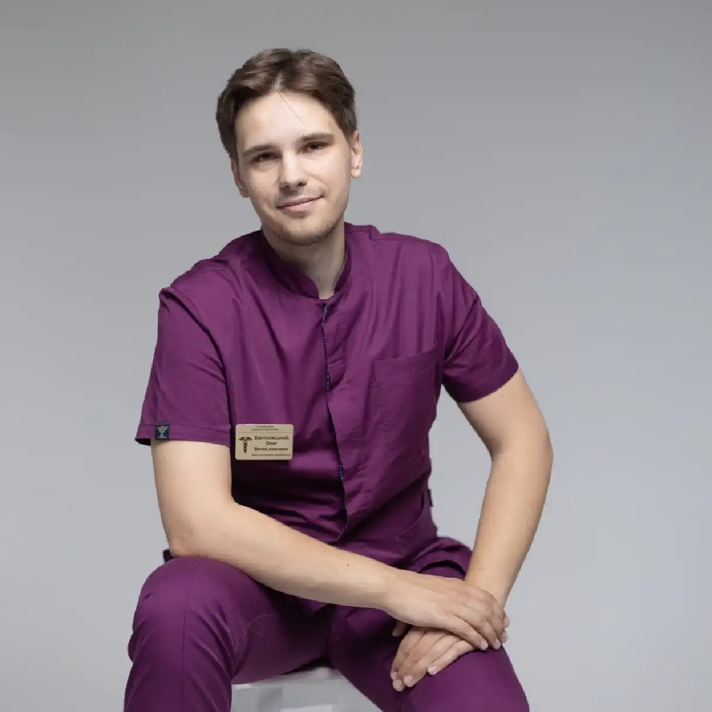

+38(068) 79 72 782
+38(068) 79 72 782Крапельниця від алкоголю Черкаси
Швидко відновимо сили та здоров'я після алкоголю


Безкоштовна консультація, працюємо цілодобово 24/7
Швидко відновимо сили та здоров'я після алкоголю
Алкогольна інтоксикація та наслідки запою — це не просто дискомфорт або тимчасове погіршення самопочуття, а серйозне навантаження на весь організм. Печінка, серце, нирки та нервова система працюють в умовах підвищеного стресу, намагаючись переробити та вивести продукти розпаду алкоголю. У результаті в людини виникають сильний головний біль, нудота, відсутність апетиту, стрибки тиску, порушення сну, тремор, підвищена тривожність і виражена слабкість. Ці симптоми можуть зберігатися тривалий час, особливо якщо запій тривав кілька днів.
Саме в таких станах на допомогу приходить крапельниця від алкоголю в Черкасах — одна з найбільш ефективних і безпечних процедур для швидкого відновлення організму. Внутрішньовенна детоксикація під контролем досвідченого нарколога дозволяє буквально протягом кількох годин покращити самопочуття, зняти болісні прояви та стабілізувати роботу життєво важливих систем. Крім того, своєчасне відновлення знижує ризик розвитку ускладнень — від порушень серцевого ритму до алкогольного делірію, який може становити загрозу життю.
Такий підхід забезпечує не тимчасове полегшення, а реальний початок відновлення організму після запою. А за потреби лікар може розробити подальший план підтримки — від прийому вітамінів і препаратів для відновлення печінки до психотерапевтичної допомоги, спрямованої на запобігання повторним епізодам запою.
Процес «прокапування від похмілля» являє собою комплексну медичну процедуру, яка спрямована на активне та безпечне очищення організму від алкоголю та продуктів його розпаду. Внутрішньовенно вводяться спеціальні розчини, що містять детоксикаційні компоненти, вітаміни, електроліти та за потреби препарати для підтримки роботи печінки та серця. Ці речовини не лише прискорюють виведення токсинів, а й нормалізують роботу життєво важливих систем організму, компенсують втрату рідини й солей, а також допомагають відновити енергетичний баланс.
Головна перевага крапельниці від алкоголю перед домашніми методами полягає у високій швидкості та ефективності дії за мінімального навантаження на організм. Уже через 30–40 хвилин після початку процедури більшість пацієнтів відзначають значне зменшення нудоти, зникнення тремтіння та головного болю, стабілізацію тиску, покращення сну й загальне підвищення самопочуття. Особливо важливо, що процедура проводиться під постійним контролем досвідченого нарколога, який коригує склад розчину та швидкість введення залежно від стану пацієнта. Це виключає ризик ускладнень, які можуть виникнути при самостійному застосуванні аптечних засобів або народних рецептів. «Прокапування» ефективне як при гострих проявах похмілля, так і на ранніх стадіях запою, запобігаючи подальшому посиленню інтоксикації та знижуючи навантаження на печінку, серце й нирки.
Крім того, такий підхід дозволяє пацієнту зберігати звичний режим і залишатися в комфортній домашній обстановці, що психологічно полегшує відновлення. Сучасні методи внутрішньовенної детоксикації забезпечують не лише зняття фізичних симптомів, а й підтримку нервової системи, зменшують дратівливість і тривожність, допомагаючи швидше повернути організм у нормальний стан. У поєднанні з подальшою терапією та дотриманням режиму харчування й сну, крапельниця від алкоголю стає ефективним інструментом для безпечного відновлення після запою або сильного похмілля.
За тривалого вживання алкоголю організм зазнає серйозного навантаження, яке зачіпає практично всі системи. Порушується обмін речовин, страждає нервова система, можливі серйозні серцево-судинні ускладнення, порушується робота печінки та нирок, послаблюється імунна система, виникають проблеми зі сном і психоемоційною стабільністю. Наслідки запою проявляються не лише фізичним дискомфортом — слабкістю, нудотою, головним болем і тремором, — а й вираженим погіршенням самопочуття, зниженням працездатності та концентрації.
Крапельниця від алкоголю в таких випадках стає оптимальним і безпечним рішенням. Процедура проводиться під постійним наглядом кваліфікованого лікаря-нарколога, який оцінює стан пацієнта та підбирає індивідуальний склад розчину з урахуванням усіх особливостей організму. До складу розчину можуть входити детоксикаційні компоненти, вітаміни групи B і C, електроліти, гепатопротектори та за потреби препарати для стабілізації тиску та серцевого ритму. Такий персоналізований підхід дозволяє ефективно вивести токсини, мінімізувати абстинентний синдром і зняти фізичні симптоми запою, знижуючи ризик ускладнень. Крім того, підтримка життєво важливих функцій організму — нормалізація тиску, пульсу, водно-сольового балансу — прискорює відновлення, дозволяє людині швидше повернути сили, стабілізувати сон і покращити загальне самопочуття.
Важливо, що процедура «прокапування» не лише усуває фізичні прояви інтоксикації, а й позитивно впливає на психоемоційний стан: зменшується тривожність, дратівливість, покращується настрій. Комплексний контроль стану пацієнта на всіх етапах забезпечує безпеку й комфорт, дозволяючи відновлюватися у звичній домашній обстановці без зайвого стресу та необхідності госпіталізації. Такий підхід значно підвищує ефективність лікування та допомагає людині швидше повернутися до нормального життя після тривалого запою.
Склад крапельниці для детоксикації організму після вживання алкоголю підбирається індивідуально й залежить від ступеня інтоксикації, віку пацієнта, загального стану здоров’я та наявності хронічних захворювань. При цьому лікар-нарколог оцінює всі показники та формує максимально безпечну й ефективну схему терапії. До стандартного розчину зазвичай включають такі компоненти:
Оптимальний склад крапельниці від алкоголю, дозування та швидкість введення кожного компонента визначається виключно досвідченим наркологом на основі огляду й оцінки поточного стану пацієнта, що забезпечує максимальну ефективність процедури та мінімізує ризики ускладнень. Такий комплексний підхід дозволяє не лише зняти гострі симптоми інтоксикації, а й значно прискорити відновлення, повернути сили, покращити самопочуття та знизити ризик ускладнень, роблячи процес виведення із запою безпечним і комфортним.
Вартість крапельниці від алкоголю в Черкасах починається від 2199 грн.
Ефект крапельниці від алкоголю помітний уже через короткий час і проявляється комплексним впливом на організм. Перше, що відчуває пацієнт, — полегшення стану: зникає головний біль, знімається нудота, зменшується слабкість і озноб. Відновлюється сон, нормалізується тиск, стабілізується серцевий ритм. Завдяки введенню розчинів, багатих на електроліти та мінерали, поповнюються втрати рідини й життєво важливих речовин, які організм втрачає під час запою. Відновлюється апетит і підвищується рівень енергії, що дозволяє швидше повернутися до звичної життєдіяльності.
Окрім зовнішніх симптомів, крапельниця запускає природні процеси детоксикації: прискорюється виведення ацетальдегіду — токсину, який є продуктом розпаду алкоголю та викликає інтоксикацію. Відновлюється водно-сольовий баланс, нормалізується робота печінки й нирок, підтримується робота серцево-судинної системи. Особлива увага приділяється нервовій системі: знижується тривожність, дратівливість, зменшується відчуття тривоги та нервового напруження. Введення вітамінів групи B і C сприяє зміцненню нервової системи, нормалізації обміну речовин і покращенню когнітивних функцій. Таким чином, крапельниця від запою не лише знімає неприємні симптоми, а й відновлює фізіологічну рівновагу організму, забезпечуючи комплексне очищення та підготовку до подальшого відновлення. Пацієнт отримує швидкий і безпечний ефект, який дозволяє знизити ризик ускладнень і прискорює процес повернення до тверезого та здорового стану.
Навіть одноразове зловживання алкоголем здатне викликати виражену інтоксикацію організму, навантажуючи печінку, нирки, серце та нервову систему. Симптоми можуть включати головний біль, слабкість, нудоту, тремтіння, підвищення тиску та дратівливість. У таких ситуаціях крапельниця від алкоголю, або «прокапування», стає ефективним і безпечним способом полегшити стан і прискорити відновлення.
Процедура спрямована на поповнення втраченої рідини, електролітів і вітамінів, усунення зневоднення та прискорення виведення ацетальдегіду — основного токсину, що утворюється при розпаді етанолу. Внутрішньовенне введення розчинів дозволяє організму швидше відновити водно-сольовий баланс, підтримує роботу життєво важливих органів і допомагає нормалізувати обмін речовин. Ефект після першої процедури помітний уже через короткий час: зменшується головний біль, зникають нудота та слабкість, нормалізується артеріальний тиск і стабілізується пульс. Окрім фізичного полегшення, пацієнт відчуває покращення загального самопочуття, підвищується працездатність, покращується настрій і відновлюється сон.
Крапельниця від алкоголю дозволяє не лише купірувати гострі прояви похмілля, а й знизити ризик ускладнень, які можуть виникнути при самостійних спробах «прокапатися» вдома. Контроль з боку досвідченого нарколога забезпечує точне дозування розчинів і препаратів, що робить процедуру максимально безпечною та ефективною. Такий комплексний підхід допомагає організму швидко впоратися з інтоксикацією й повертає людині відчуття легкості, бадьорості та внутрішньої рівноваги.
Тривале та неконтрольоване вживання алкоголю під час запою призводить до глибокої інтоксикації організму та серйозно порушує роботу внутрішніх органів — печінки, нирок, серця та нервової системи. У людини посилюються слабкість, тремор, тривожність, нудота, безсоння, стрибки тиску, прискорене серцебиття та виражені симптоми абстинентного синдрому. У таких станах крапельниця від запою стає найефективнішим і найбезпечнішим методом стабілізації стану та поступового виведення організму з токсичного навантаження.
Інфузійна терапія спрямована на поповнення рідини та електролітів, нормалізацію кислотно-лужного балансу, усунення зневоднення, підтримку роботи печінки та нервової системи, а також прискорення виведення токсинів і продуктів розпаду етанолу. Внутрішньовенне введення розчинів дозволяє швидко відновити водно-сольовий та енергетичний баланс, знизити навантаження на серцево-судинну систему, зменшити тривожність, тремор і вираженість абстиненції. Вже після першої процедури пацієнт відчуває помітне полегшення: зменшуються слабкість і нудота, стабілізується тиск і пульс, покращується сон та загальне самопочуття. На відміну від самостійних спроб вийти із запою, медична крапельниця проводиться під контролем нарколога, з урахуванням стану пацієнта, тривалості запою та супутніх захворювань. Це забезпечує правильний підбір розчинів і препаратів, запобігає небезпечним ускладненням — судомам, делірію, різким стрибкам тиску та порушенням серцевого ритму.
Комплексна інфузійна терапія допомагає організму безпечно пройти етап детоксикації, знизити симптоми абстиненції та підготувати пацієнта до подальшого лікування алкогольної залежності, відновлення сил і повернення до стабільного самопочуття.
Під час тривалого запою організм зазнає серйозного виснаження: відбувається масова втрата вітамінів, мінералів і електролітів, порушується нормальна робота печінки, серцево-судинної системи та мозку. Постійне надходження алкоголю створює хронічну інтоксикацію, яка впливає на обмін речовин, знижує імунітет, провокує порушення сну та погіршує психоемоційний стан. У таких умовах самостійне припинення вживання алкоголю без медичної підтримки може бути небезпечним і призвести до серйозних ускладнень, включно із судомами, різкими стрибками тиску або алкогольним делірієм.
Крапельниці при алкогольній інтоксикації є комплексною медичною допомогою, спрямованою на відновлення організму. Інфузійна терапія заповнює дефіцит рідини, електролітів і вітамінів, підтримує роботу життєво важливих органів і прискорює виведення токсинів. Використовувані розчини та препарати допомагають нормалізувати біохімічні процеси, стабілізувати роботу серця, печінки та нирок, а також поліпшити стан нервової системи, знижуючи тривожність, дратівливість і втому. Індивідуально підібраний курс інфузій дає змогу досягти максимального ефекту: пацієнт поступово відновлює сили, нормалізується сон, зникає головний біль і нудота, стабілізується тиск і пульс. Контроль стану лікарем-наркологом на кожному етапі процедури забезпечує безпеку та дає змогу оперативно скоригувати склад крапельниці залежно від реакції організму.
Окрім безпосереднього полегшення стану, така терапія знижує ризик рецидиву, готує пацієнта до подальшої реабілітації, включно з психотерапевтичною підтримкою та корекцією способу життя. Комплексний підхід не лише усуває наслідки запою, а й створює умови для довготривалого відновлення здоров’я, дозволяючи людині безпечно повернутися до нормального життя, відновити фізичну та психоемоційну стабільність, а також зменшити навантаження на внутрішні органи, що постраждали від тривалого вживання алкоголю.
Тривале вживання алкоголю серйозно порушує роботу нервової системи та внутрішніх органів. Поступово розвивається абстинентний синдром — стан, за якого організм гостро реагує на відсутність алкоголю. Пацієнта можуть мучити сильна тривога, дратівливість, безсоння, тремор, слабкість і прискорене серцебиття. Печінка та нирки перевантажені токсинами, а водно-сольовий баланс організму суттєво порушений. Крапельниця від запою допомагає організму безпечно адаптуватися до стану тверезості. Вона прискорює виведення токсинів і продуктів розпаду алкоголю, нормалізує рівень електролітів і мінералів, підтримує роботу серця та печінки, а також покращує функціонування нервової системи. Завдяки введенню вітамінів і гепатопротекторів відновлюються сили, зменшується слабкість і головний біль, стабілізується емоційний стан. Крім того, крапельниця при інтоксикації знижує ризик ускладнень запою, таких як серцево-судинні порушення, панкреатит або судоми, що можуть виникати під час самостійного припинення вживання алкоголю. Завдяки комплексному впливу розчину пацієнт швидше повертається до нормального самопочуття, покращується сон, зменшується тривожність і зміцнюється імунна система. Ефективне прокрапування дозволяє не лише усунути фізичні симптоми, а й підготувати організм до подальшого відновлення та профілактики рецидивів, створюючи основу для безпечного тверезого періоду.
Зняття алкогольної інтоксикації в Черкасах є найважливішим етапом медичної допомоги при гострому алкогольному отруєнні або після тривалого періоду зловживання спиртними напоями. Унаслідок надмірного вживання алкоголю в організмі накопичуються токсичні продукти його розпаду, які негативно впливають на серце, печінку, нервову систему та головний мозок. Такий стан становить серйозну загрозу для здоров’я і життя людини та нерідко супроводжується небезпечними ускладненнями. Саме тому вкрай важливо своєчасно звертатися по професійну медичну допомогу й довіряти лікування кваліфікованим фахівцям.
Самостійні спроби усунути наслідки алкогольної інтоксикації без участі лікаря часто призводять до погіршення самопочуття та розвитку ускладнень. Різке припинення вживання алкоголю, безконтрольний прийом лікарських препаратів або відсутність медичного спостереження можуть викликати різкі стрибки артеріального тиску, порушення серцевого ритму, судомні стани, сильну тривожність та інші тяжкі симптоми. Лише досвідчений лікар-нарколог здатний правильно оцінити ступінь інтоксикації, врахувати загальний стан пацієнта, наявність супутніх захворювань і підібрати найбільш безпечну та ефективну схему лікування.
Кваліфіковане зняття алкогольної інтоксикації проводиться із застосуванням сучасних методів інфузійної терапії та спеціально підібраних медикаментів. Лікувальні крапельниці допомагають швидко вивести з організму токсичні речовини, відновити водно-електролітний баланс, підтримати роботу життєво важливих органів і стабілізувати психоемоційний стан. Такий комплексний медичний підхід дозволяє значно знизити ризик ускладнень, прискорити покращення самопочуття та запустити природні процеси відновлення організму після негативного впливу алкоголю.
Медична допомога при алкогольній інтоксикації в Черкасах надається в умовах професійного контролю та із застосуванням необхідного діагностичного обладнання. Фахівець проводить первинний огляд пацієнта, оцінює життєво важливі показники, визначає тяжкість стану та підбирає оптимальну програму терапії. Протягом усього курсу лікування здійснюється постійне спостереження і за потреби коригування призначень. Такий підхід забезпечує високий рівень безпеки, ефективність процедур і дозволяє пацієнту отримати повноцінну та якісну наркологічну допомогу.
Після проведення детоксикації важливо продовжити системне відновлення організму, оскільки усунення гострої інтоксикації — лише перший етап повернення до нормального самопочуття та повноцінного життя. У цей період ключове значення мають комплексні заходи, спрямовані на зміцнення здоров’я, поповнення втрачених ресурсів і підтримку психоемоційного стану.
Передусім рекомендована консультація лікаря-нарколога, який оцінить динаміку відновлення, за потреби скоригує лікування, призначить повторні інфузії або додаткові препарати для підтримки роботи печінки, серця та нирок. Одночасно вкрай важливим є прийом вітамінів і мінералів, що дозволяє заповнити дефіцит поживних речовин, поліпшити обмінні процеси та нормалізувати роботу нервової системи. Повноцінне харчування та відпочинок відіграють не менш важливу роль: організм отримує необхідні білки, вуглеводи, жири, мікроелементи та воду для відновлення енергетичного балансу й регенерації клітин. Також рекомендоване поступове повернення до фізичної активності, яка сприяє поліпшенню кровообігу, відновленню тонусу м’язів і прискорює метаболічні процеси.
Особлива увага приділяється підтримці психоемоційного стану. Після запою людина може відчувати тривожність, дратівливість, депресивні прояви та зниження мотивації. Психологічна допомога, психотерапевтичні консультації та мотиваційні програми допомагають стабілізувати емоційний фон, знизити ризик рецидиву та зміцнити внутрішні ресурси пацієнта для подальшого відновлення. Медична служба UmbrellaPlus пропонує комплексний підхід, що об’єднує крапельниці для детоксикації, спеціалізовані детокс-програми, індивідуальні рекомендації щодо харчування й режиму, а також професійну психологічну підтримку. Такий підхід забезпечує безпечне та повноцінне відновлення організму, прискорює регенерацію органів і систем, зміцнює психоемоційний стан і допомагає пацієнтові повернутися до здорового способу життя з мінімальним стресом для організму.
Крапельниця від алкоголю — це швидкий і безпечний спосіб відновити організм після запою або похмілля. Вона знімає інтоксикацію, повертає ясність свідомості та покращує загальне самопочуття. За перших ознак алкогольної інтоксикації зверніться по професійну допомогу до кваліфікованих лікарів.
Телефон для консультації: +38(050-021-69-57)
Так, ми суворо дотримуємося повної конфіденційності на всіх етапах лікування. Інформація про пацієнта, діагноз та проходження терапії не передається третім особам. Звернення до нас не тягне за собою постановку на облік. Ви можете бути впевнені у безпеці та анонімності.
Програма лікування розробляється індивідуально після консультації з фахівцем. Враховуються вид залежності, її тривалість, фізичний та психологічний стан пацієнта. Такий підхід дозволяє підвищити ефективність терапії та знизити ризик зриву. Ми не використовуємо шаблонні рішення.
Так, ми супроводжуємо пацієнтів і після основного курсу лікування. Проводяться консультації, рекомендації щодо адаптації та профілактики рецидивів. За потреби можлива подальша психологічна підтримка. Це допомагає зберегти результат та повернутися до повноцінного життя.
Анонимно

Ну в хлопців просто золоті руки й світла голова, мене капали Олексій та Владислав, буквально за декілька сеансів я наче заново народився, до цього пив більше 3х тижнів, не міг зупинитись, дуже радий що знайшов саме цих спеціалістів, всім рекомендую
Анонимно
В течение нескольких лет я злоупотреблял алкоголь, что привело к увольнению с работы и вызвало у меня мысли о суициде. Понимая, что такой образ жизни неприемлем, я обратился за помощью в клинику “Амбрела”. Здесь я смог преодолеть свою зависимость от спиртного благодаря заботливым и опытным врачам, а также эффективной системе лечения. Спустя более года я полностью избавился от желания употреблять алкоголь, и теперь моя жизнь вернулась в норму. Я даже не приближаюсь к спиртному! Благодарю врачей клиники “Амбрела” за их помощь и заботу.
Анонимно
Я обращался за помощью в различные клиники, пытаясь избавиться от своей зависимости от алкоголя, но без особых успехов. Никак не мог справиться с желанием прибегнуть к бутылке, пока друг не посоветовал мне обратиться в центр “Амбрелла”. Я записался на прием и был поражен заботливым отношением к пациентам. Уже прошло два года, и теперь я смотрю на алкоголь с абсолютной равнодушием, активно занимаюсь спортом и улучшил отношения в семье. Благодаря центру “Амбрелла” моя жизнь была спасена от алкогольной зависимости!
Анонимно
Хочу выразить свою благодарность врачам из центра алкоголизма “Амбрела” за то, что они буквально спасли мою жизнь. В течение последнего года я сильно увлекался питьем, и все это привело к катастрофическим последствиям. Хотя я ходил на терапевтические сеансы, но безрезультатно. Тогда я нашел адрес клиники “Амбрела” в интернете, изучил отзывы и информацию о центре, и записался на прием. Там мне сразу предложили методику лечения, которая помогла не только справиться с физической ломкой, но и психической зависимостью от алкоголя. Не буду распространяться, скажу только одно - после пребывания в этой клинике я стал другим человеком, и навсегда забыл, что такое привкус алкоголя. Больше меня не тянет на это! Я искренне верю, что в центре “Амбрела” трудятся настоящие целители душ!
Анонимно
После сложного развода мой сын начал подавлять свою обиду и горе употреблением алкоголя. Он старался скрывать это от меня, но я, как мать, почувствовала, что что-то не так. В конечном итоге, ситуация стала критической. Моя знакомая посоветовала мне обратиться в клинику “Амбрела”. Я была приятно удивлена их работой! Они помогли сыну преодолеть очередной период злоупотребления алкоголем, и с тех пор прошел уже более года, и он совсем не пьет.
Анонимно
Благодаря вашей помощи, моя семья была спасена. Я с трудом уговорила мужа начать лечение, и последний каплей был пьяное ДТП. К счастью, в аварии никто не пострадал, но это был для него сигнал к действию. Он наконец согласился пройти курс лечения на дому, в стационар не хотел ложиться. Лечение было трудным, и были моменты, когда срыв был настолько близок, но благодаря вашему центру Амбрелла мы справились с этим.
Анонимно
Для меня эта клиника стала настоящим спасением! Долгое время я упорно отказывался от лечения, уверен был, что со мной все в порядке. Но к счастью, семья уговорила меня попробовать. И сегодня я чувствую себя невероятно счастливым, осознавая, что мне абсолютно не нужен алкоголь. Огромное спасибо за помощь и поддержку, которые я получил здесь! Я благодарен вам за новую возможность жить полноценной и счастливой жизнью!
Анонимно
Выражаю благодарность ребятам, которые оказали мне помощь и не отвернулись. Уже 10 месяцев я остаюсь чистой. Благодарю за то, что помогли найти новый путь в моей жизни.
Номер телефону:
+380 (68) 797 27 82
+380 (50) 021 69 57
Адресу наркологічного центра вашого міста уточнюйте за
телефоном
Працюємо: Київ, Одеса, Львів, Харків, Дніпро, Запоріжжя,
Черкасах, Чугуєві, Чорноморську, Кам'янському
Telegram: t.me/umbrellaplus
Графік работы: Цілодобово